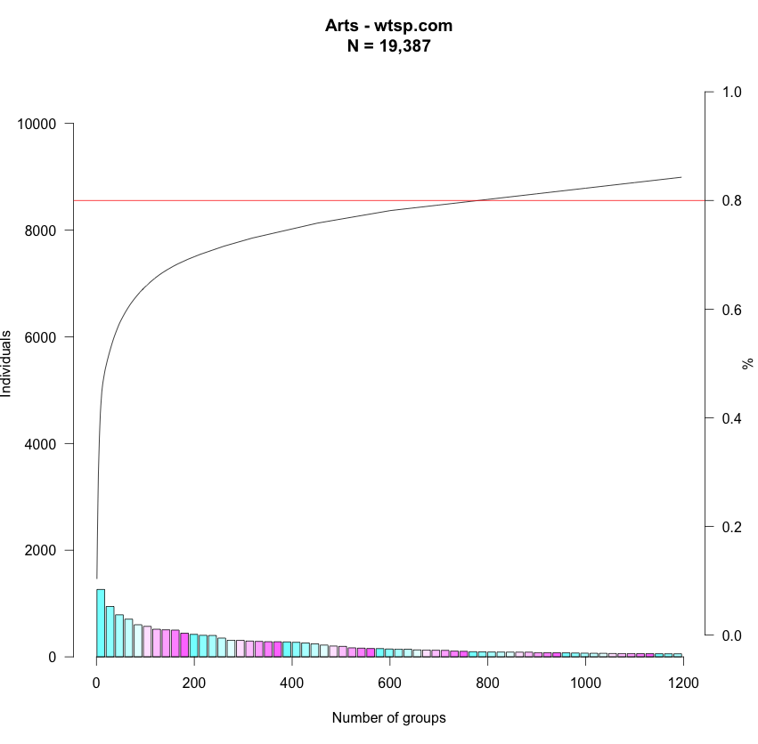
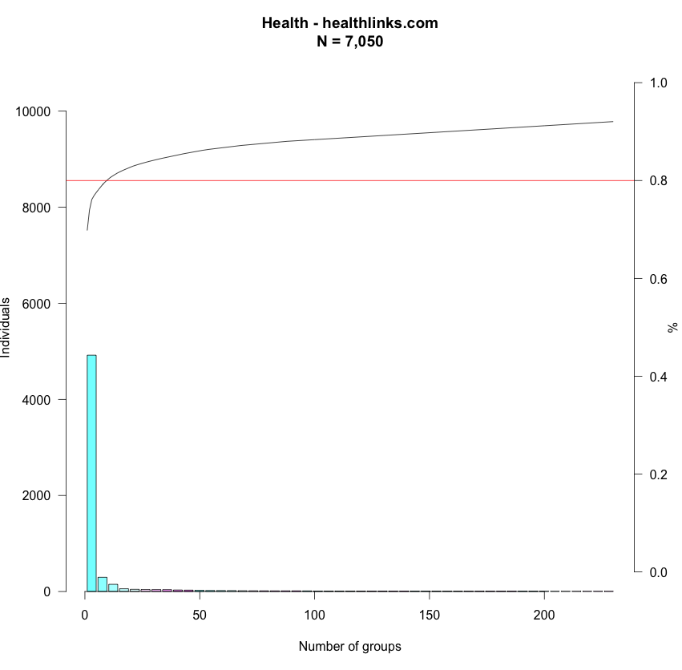
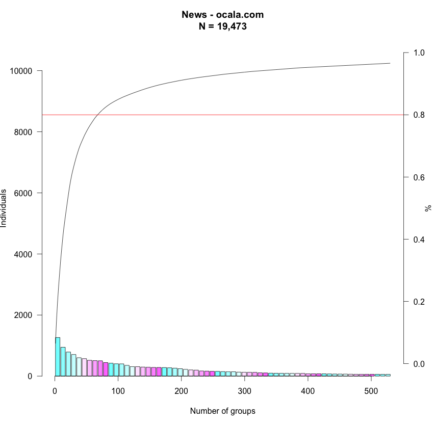
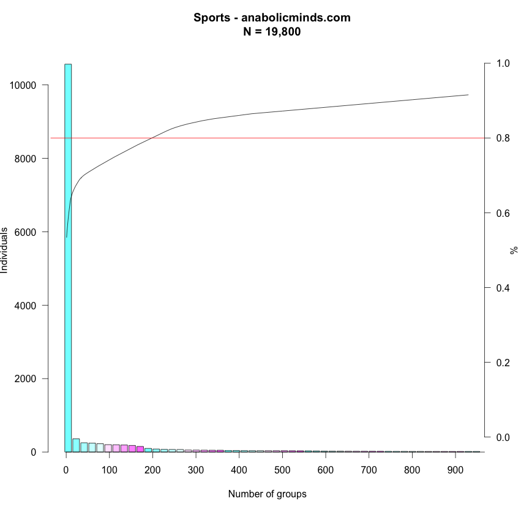
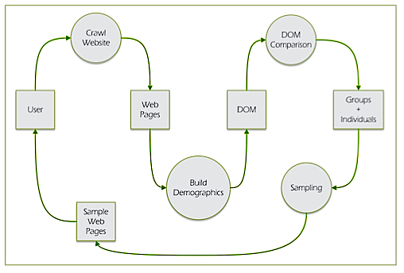
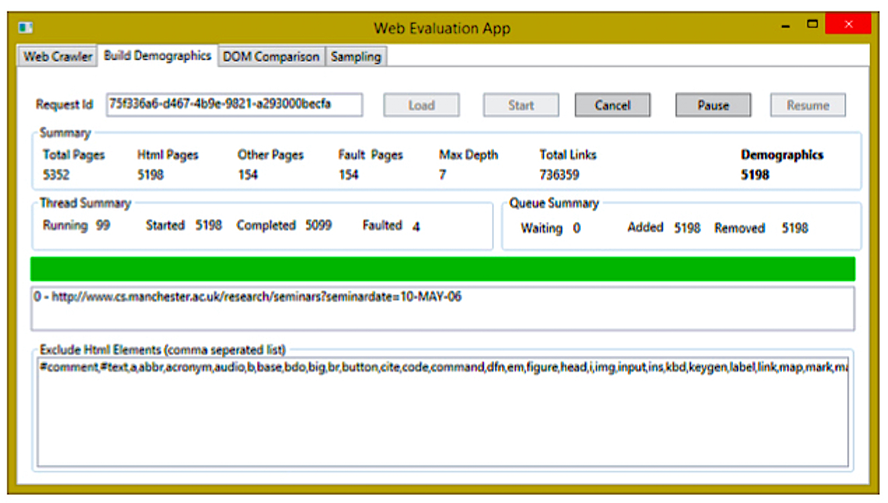
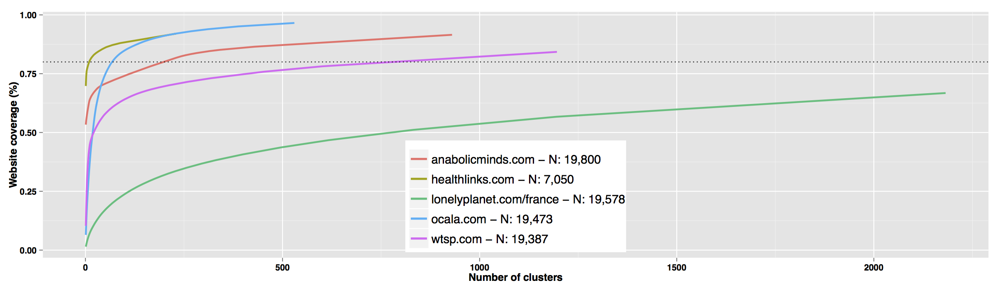

class: centre, middle, inverse uom-image: css/L_shape_col_white_background.png iam-image: css/iam-inverse.png .uomi[<img class="banner" src="{{uom-image}}" width="100%">] .iami[<img class="banner" src="{{iam-image}}" width="100%">] [](http://dx.doi.org/10.5281/zenodo.17437) # [DOM Block Clustering for Enhanced Sampling and Evaluation](http://dx.doi.org/10.1145/2745555.2746649) ### <a id="presentedby">Simon Harper</a>, Anwar Ahmad Moon, Markel Vigo, Giorgio Brajnik, and Yeliz Yesilada. ### W4A 2015 -- Florence, Italy .asidenb[ **Slides**: http://goo.gl/EuR8Md ] --- name: uomtemplate uom-image: css/L_shape_col_white_background.png iam-image: css/iam.png title: DOM Block Clustering for Enhanced Sampling and Evaluation presenter: [@sharpic](http://twitter.com/sharpic) doi: http://dx.doi.org/10.1145/2745555.2746649 this: - [Paper](http://dx.doi.org/10.1145/2745555.2746649) / [Presentation](http://goo.gl/EuR8Md) presentation: http://goo.gl/EuR8Md bib: http://sharpic.github.io/DOMBlockClustering/DOMBlockClustering.bib data: https://bitbucket.org/amoon/webevaluation code: https://bitbucket.org/amoon/webevaluation venue: W4A 2015 -- Florence, Italy layout: true class: left, middle .uomi[<img class="banner" src="{{uom-image}}" width="100%">] .iami[<img class="banner" src="{{iam-image}}" width="100%">] .footer[{{presenter}} | [{{title}}]({{doi}}) {{this}} | {{venue}}] ## {{focus}} --- template: uomtemplate section: Foundation (1/5) focus: Rationale .sections[{{section}}] 1. **Crawling** builds a population 'demographic'; 1. think website **Census**; 1. but we can't test all pages; 1. census enables an accurate **Representative Sample** to be drawn; and 1. our 'demographic' is based on structure similarity. -- .asidenb[ ### Let's 'Flip' the presentation ] --- template: uomtemplate section: Results (2/5) focus: Arts Domain .sections[{{section}}] .center[] --- template: uomtemplate section: Results (2/5) focus: Health Domain .sections[{{section}}] .center[] --- template: uomtemplate section: Results (2/5) focus: News Domain .sections[{{section}}] .center[] --- template: uomtemplate section: Results (2/5) focus: Sports Domain .sections[{{section}}] .center[] --- template: uomtemplate section: Results (2/5) focus: Teens Domain .sections[{{section}}] .center[<img src="figures/teens_3.png" width="54%">] --- template: uomtemplate section: How (3/5) focus: Creating the Demographic .sections[{{section}}] .center[] --- template: uomtemplate section: How (3/5) focus: DOM Block Clustering #1 .sections[{{section}}] - We ignore non HTML pages and fault pages; - a DOM object is an XML document without any values or content; - each XML node represents one HTML tag in a Web page; - DOM objects only contain those nodes which are required for evaluation; - the effect of DOM set changes negates the re-crawl; --- template: uomtemplate section: How (3/5) focus: DOM Block Clustering #2 .sections[{{section}}] - equivalence relation we compute between feature sets; - and the definition of such a relation tells us; - which elements of the DOM are relevant and which are not; - after removing the non-relevant elements... - "two pages are considered to belong to the same demographics if their sequence of elements in the DOM is the same". --- template: uomtemplate section: How (3/5) focus: Clustering Example .sections[{{section}}] ```` 1:<div><img><div><a><a><div><ul><li><li></ul></div> s2:<div><div><a><div><ul><li><li></ul></div> s3:<div><a><div><img><div><ul><li><li></ul></div> ```` If ````<a>```` and ````<img>```` were considered non-relevant because of a particular criteria, according to our approach the above sequences would belong to the same demographics as the three sequences would be: ```` d0:<div><div><div><ul><li><li></ul></div> ```` --- template: uomtemplate section: How (3/5) focus: Clustering Tool .sections[{{section}}] .center[] --- template: uomtemplate section: Related Work (4/5) focus: Website Accessibility Conformance Evaluation Method .sections[{{section}}] .aside[E. Velleman and T. Van Der Geest. Page sample size in web accessibility testing: how many pages is enough? In Proc. of ASSETS’ 13, page 61.] ### Phase #1 - Identify... - Ad-hoc Sample Common Web pages (pages like the home, login, sitemap, help, contacts), - pages with essential functionalities (those supporting focal use cases), - different types of pages (in terms of layout, templates, appearance, behaviour, coding style), and - pages based on different auxiliary technologies (such as SVG, MathML, PDF). --- template: uomtemplate section: Related Work (4/5) focus: Website Accessibility Conformance Evaluation Method .sections[{{section}}] .aside[E. Velleman and T. Van Der Geest. Page sample size in web accessibility testing: how many pages is enough? In Proc. of ASSETS’ 13, page 61.] ### Phase #2 - Select... - Structured sample on the basis of Phase #1, - a second random sample of size at least 10% of the structured sample has also to be defined. - "close" under the notion of complete process: if any page in the two samples is part of a process (such as purchase of a product) then all the pages supporting that process need to be added to the sample. --- template: uomtemplate section: Related Work (4/5) focus: Website Accessibility Conformance Evaluation Method .sections[{{section}}] .aside[E. Velleman and T. Van Der Geest. Page sample size in web accessibility testing: how many pages is enough? In Proc. of ASSETS’ 13, page 61.] ### Results - 60 Websites / Total of 47,000 Pages - Average Pages per site is 793 / 10% 79 pages per site - **10% of structured sample - without Demographics** <blockquote> 13 common pages one captures at least 60% of the unique issues. When using the 13 common pages with additional 10 random ones, one captures at least 80% of the issues. With 13 common pages and 20 random ones, one reaches 99% </blockquote> --- template: uomtemplate section: Related Work (4/5) focus: Results Redux class: left, top .sections[{{section}}] .tab[ |**Category** | **URL** | ** Pages** | ** Unclassified** | ** Clusters** | **Accounting for 80%**| |--------------|----------------------------------------------------|-------------:|---------------------:|---------------------:|---------------------------:| |<span style="color: magenta; padding: 3px;">Arts</span> | [wtsp.com](http://www.wtsp.com) | 19387 | 3048 (16%) | 1196 (6%) | 782 (4%) | |<span style="color: olive; padding: 3px;">Health </span> | [healthlinks.com](http://www.healthlinks.com) | 7050 | 582 (8%) |230 (3%) | 10 (0.1%) | |<span style="color: cyan; padding: 3px;">News</span> | [ocala.com](http://www.ocala.com) | 19473 | 668 (3.4%) |530 (2.7%) |68 (0.3%) | |<span style="color: orange; padding: 3px;">Sports</span> | [anabolicminds.com](http://www.anabolicminds.com) | 19800 | 1676 (8.5%) |930 (4.7%) |199 (0.1%) | |<span style="color: green; padding: 3px;">Teens</span> | [lonelyplanet.com/france](http://www.lonelyplanet.com/france)| 19578 | 6504 (33%) | 2180 (11%) | n/a | ] .fig[] --- template: uomtemplate section: Related Work (4/5) focus: All the Background you Need! .sections[{{section}}] - Background Treatise - [G. Brajnik. The Troubled Path of Accessibility Engineering: an Overview of Traps to Avoid and Hurdles to Overcome, SIGACCESS Newsletter 100, June 2011 http://portal.acm.org/citation.cfm?id=1982573](http://portal.acm.org/citation.cfm?id=1982573) - Get the BibTex for the Paper and Presentation at: {{bib}} --- template: uomtemplate section: Wrapping-Up (5/5) focus: Limitations, Conclusions, & Future Work .sections[{{section}}] - Save crawl time by using the [Common Crawl http://commoncrawl.org/](http://commoncrawl.org/) - Address Clustering similarity; - Move away from self wrapped diff; - aim to create more holistic clusters; - **Good initial results (dirty code)**, - but there is scope for improvement, so - new Doctoral Project based on this work. --- title: DOM Block Clustering for Enhanced Sampling and Evaluation presenter: [@sharpic](http://twitter.com/sharpic) doi: http://dx.doi.org/10.1145/2745555.2746649 this: - [Paper](http://dx.doi.org/10.1145/2745555.2746649) / [Presentation](http://goo.gl/EuR8Md) presentation: http://goo.gl/EuR8Md bib: http://sharpic.github.io/DOMBlockClustering/DOMBlockClustering.bib data: https://bitbucket.org/amoon/webevaluation code: https://bitbucket.org/amoon/webevaluation venue: W4A 2015 -- Florence, Italy layout: true class: centre, top, inverse uom-image: css/L_shape_col_white_background.png iam-image: css/iam-inverse.png .uomi[<img class="banner" src="{{uom-image}}" width="100%">] .iami[<img class="banner" src="{{iam-image}}" width="100%">] [](http://dx.doi.org/10.5281/zenodo.17437) # Thanks! # Questions? What Am We Missing? ## [DOM Block Clustering for Enhanced Sampling and Evaluation](http://dx.doi.org/10.1145/2745555.2746649) ### <a id="presentedby">Simon Harper</a>, Anwar Ahmad Moon, Markel Vigo, Giorgio Brajnik, and Yeliz Yesilada. ### W4A 2015 -- Florence, Italy .asidenb[ - Paper at: {{doi}} - Code/Data at: {{code}} - Refs at: {{bib}} - Presentation at: {{presentation}} ] ---